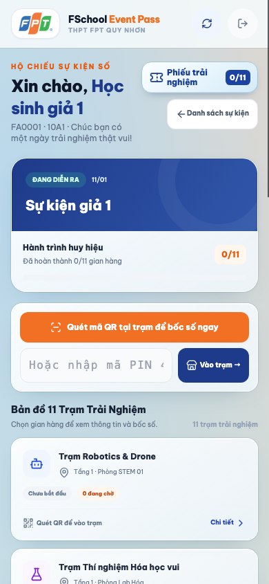
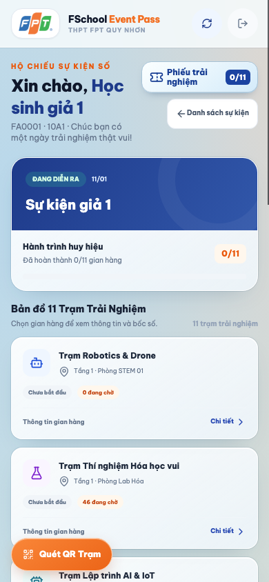
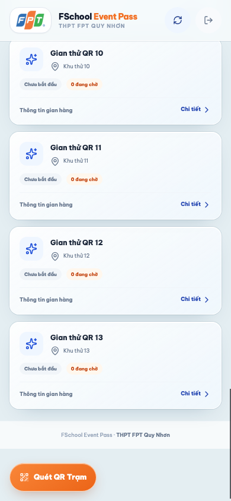
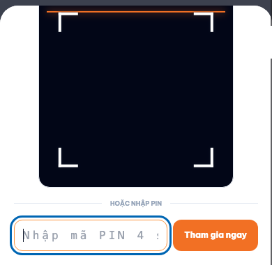

Một điểm quét QR, cố định góc dưới bên trái
FSchool Event Pass · THPT FPT Quy Nhơn · 23/11/2026.
Đã xác nhận nút thực sự cố định khi cuộn trong Chrome. 45 lần đo với 2/6/20 gian, ở 1280/320/375/390/430 px: độ lệch vị trí trong mỗi ngữ cảnh là 0 px, cuộn thực tế tối đa 3.126 px. Không triển khai production hoặc gọi dịch vụ/dữ liệu thật.
A. File thay đổi
| File | Phạm vi |
|---|
| index.html | Bỏ khung QR/PIN trùng, chuyển studentQrFab ra ngoài main/section thành con trực tiếp của body, bỏ QR launcher trong chi tiết và nhãn QR lặp trên thẻ. Giữ form PIN của scanner, bổ sung trạng thái hỗ trợ trình đọc màn hình. Xóa listener của input quickBoothPinInput đã loại bỏ. |
| event-glass.css | Fixed bên trái, safe area, khoảng trống cuối trang, ẩn FAB khi modal mở, vị trí toast và kích thước cửa sổ QR/input ở viewport thấp. |
| event-ui.js | Khi scanner mở, thông báo hiển thị trong qrScannerStatus; tránh toast nổi che form PIN. Không thay đổi xử lý nghiệp vụ. |
| scripts/student-qr-qa.cjs — mới | Chrome localhost: chụp trước–sau, đo khi cuộn, fixture 2/6/20 gian, camera video giả, QR/PIN, modal/focus, reload và dấu backend. |
Manifest, hash và kiểm tra phạm vi. Toàn bộ Code.gs, EventAccess.gs, EventWorkflow.gs, EventImages.gs, student-pass.js/CSS, event-admin.js và event-roster.js giữ nguyên byte so với snapshot đầu đợt. Các hàm QR/PIN và bốc số hiện có giữ nguyên; không đổi đăng nhập, OTP, phân quyền, hàng chờ, xác nhận hay quay thưởng.
B. Phần giao diện đã loại bỏ
- Khung chính gồm “Quét mã QR tại trạm để bốc số ngay”, input PIN nhanh và nút “Vào trạm”.
- Dòng QR/icon QR gây hiểu nhầm trên mỗi thẻ được thay bằng “Thông tin gian hàng”; giữ tên, icon gian, địa điểm, trạng thái, số chờ và Chi tiết, đúng thứ tự cấu hình.
- Nút mở QR lặp trong cửa sổ chi tiết đã bỏ; chức năng Bốc số/chi tiết hiện có vẫn giữ. Nút QR chính là studentQrFab.
C. Cách cố định nút
Trước đây Fab nằm trong studentApp, bị md:hidden trên desktop và đi cùng vùng animate-fadeInUp có transform. Bản mới đặt trực tiếp dưới body, ngoài nội dung cuộn và vùng có animation/filter/contain; dùng position:fixed, left:max(1rem,env(safe-area-inset-left,0px)), bottom:calc(1rem + env(safe-area-inset-bottom,0px)), z-index 45. Tài liệu fixed/containing block · Tài liệu env/safe area.
Nút giữ icon QR, cam FPT, mặt kính/viền sáng và mục tiêu chạm tối thiểu 48 px. Hiện trên desktop lẫn mobile khi studentApp đang hiển thị; ẩn ở đăng nhập/giáo viên và khi scanner, chi tiết, đánh giá hoặc dialog phiếu đang mở. Khi đóng modal, CSS hiện lại nút; cơ chế focus hiện có đưa bàn phím về nút mở.
Body chừa 5.5rem + safe-area-inset-bottom phía cuối khi học sinh đăng nhập. Cuộn tới cuối vẫn đọc/thao tác được thẻ cuối và footer. Toast thông thường nằm trên FAB; trong scanner, thông báo nằm trong cửa sổ để không che input/submit. Không thêm listener cuộn, API hoặc timer polling.
D. PIN nằm ở đâu
Bấm Quét QR Trạm → HOẶC NHẬP PIN. Giữ input qr-pin-input, form submit và joinBoothByPin() hiện có. Camera bị từ chối hoặc không tải được thư viện vẫn có form PIN. Cửa sổ giới hạn chiều cao theo viewport động, cuộn bên trong; font PIN mobile 16 px giúp tránh phóng to input trên iPhone. Không tạo thêm màn hình đăng nhập hay thay đổi điều kiện nhận lượt.
E. Ảnh trước và sau
Ảnh chụp Chrome localhost, cùng dữ liệu giả và viewport; không phải production.

Trước: khung QR/PIN chính và lời mời QR lặp trên thẻ.
Sau: nút cam cố định bên trái, danh sách gọn hơn.
Cuối danh sách 20 gian: có khoảng trống, nút và footer tách nhau.
Viewport 390×380 mô phỏng không gian khi bàn phím mở; input và nút submit vẫn thao tác được.Ảnh sau: desktop 1280 · 320 · 375 · 430.
F. Kết quả kiểm thử
| Bộ kiểm tra | Kết quả | Bằng chứng |
|---|
| Trước sửa / toàn bộ kiểm thử Node sau sửa | 104/104 → 104/104 PASS | Baseline · Sau sửa |
| Chrome QR chuyên biệt | 147/147 PASS | Kết quả chi tiết, tọa độ và giới hạn |
| Chrome UI hồi quy hiện có | 50/50 PASS | Kết quả: modal, OTP giả lập, icon, hàng chờ, phiếu, bình chọn/quay thưởng, reduced motion/transparency. |
| Tình huống bắt buộc | Kết quả |
|---|
| Hiện sau đăng nhập, vị trí khi cuộn | PASS. 45 lần đo, gồm 2/6/20 gian × 5 độ rộng × 3 vị trí cuộn; lệch tọa độ 0 px. Tăng gian không đổi thứ tự/thông tin và không tạo request khi cuộn. |
| Nhấn/Enter mở camera, QR hợp lệ/sai/khác sự kiện | PASS với scanner callback giả và Chrome fake video device. Gọi luồng Html5Qrcode.start hiện có, track video mở/dừng đúng; payload QR đi qua parser và backend giả lập. QR khác sự kiện không tạo JOIN_QUEUE. |
| PIN đúng/sai, camera bị từ chối, lượt trùng | PASS. PIN đúng vào đúng gian, sai báo trong scanner, camera lỗi vẫn có PIN, lặp QR giữ một bản ghi lượt. |
| Đóng QR, focus, bàn phím | PASS. Escape dừng/đóng và trả focus về FAB; modal/PIN thao tác được trong viewport thấp, elementFromPoint xác nhận input không bị toast che. |
| Reload, phiếu và con dấu | PASS. Phiên khôi phục, một FAB duy nhất, dấu chỉ có sau teacher/backend xác nhận; phiếu và cửa sổ đánh giá mở sẽ ẩn FAB, đóng lại hiện. |
| Footer và 20 gian | PASS. Cuối trang thẻ cuối/footer nằm trên FAB. DOM không dựng lại trong khi cuộn; không gọi API khi cuộn. Mẫu 20 gian có frame p50 khoảng 16,7 ms, p95 khoảng 17,6 ms trên Chrome headless của máy kiểm thử. |
Các con số lặp theo viewport/vị trí được đếm thành các kiểm tra, không phải 147 nghiệp vụ khác nhau. Không dùng timing trên máy kiểm thử để cam kết FPS cho điện thoại thật.
G. Giới hạn còn lại và cập nhật
- Chưa kiểm tra iPhone Safari/Chrome Android trên thiết bị thật, home indicator và bàn phím hệ điều hành thật. CSS safe area đã có nhưng Chrome CDP hiện tại không hỗ trợ lệnh mô phỏng inset; không ghi PASS giả cho trường hợp này.
- Camera dùng video device giả; callback nhận payload QR và từ chối camera được mô phỏng. Chưa kiểm tra nhận dạng ảnh QR qua camera vật lý/phiên bản thư viện CDN trên production.
- Giao diện sử dụng :has như các phần sẵn có của dự án; nghiệm thu trên trình duyệt hiện đại. Không thêm polyfill/framework hoặc thay thư viện camera.
- Cập nhật đồng bộ index.html, event-glass.css, event-ui.js trong bundle frontend và tải mới để tránh cache cũ. Đợt bố trí QR này không cần sửa/deploy Apps Script. Các thay đổi chưa commit và backend từ các đợt trước vẫn được giữ nguyên.
Đã đạt tiêu chí nút cố định khi cuộn trong môi trường Chrome kiểm thử. Không tự triển khai production; còn cần nghiệm thu camera, bàn phím và safe area trên thiết bị thật.